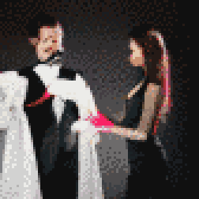

TL;DR: I'm trying to build a daily creative writing habit. This post is the result of an exercise toward that end. It's probably an awful first draft of a little flash fiction scene, unless I've tried something especially weird or decided to write something meta. Let me know what you think!
"So," said the magician's assistant, "do you ever do, like, real magic on stage?"
The old magician sighed. "Not really," they said. They picked up a pack of cigarettes from the dressing room counter and started whacking it against their palm.
"How come?"
The magician shook a cigarette from the pack and returned it to the counter. They flicked the nail of their index finger against the pad of their thumb and a small orange flame sprouted from their fingertip.
"Well," said the magician, "there's two kinds of magic." They paused to light the cigarette and take a drag. They shook out the flame and exhaled through pursed lips. The smoke swirled out into a tight tendril that spiraled directly into a ceiling vent.
"Two kinds of magic," the assistant repeated. They pulled out a little notebook & pen and jotted that down.
The magician chuckled. "Yeah, so, the first kind is subtle: If you blink, you'll miss it." They absentmindedly tapped the cigarette off to the side and the ash fell away from the cherry to drift into the mouth of an open beer can on the counter.
"Okay," said the assistant, "and what about the other kind?"
"The other kind," said the magician, "is so over the top that folks can't accept it when it happens."
"What do you mean?"
"When most folks see magic happen - real, epic, legendary magic - it's traumatic. It so thoroughly disagrees with their expectations that they'll never remember what happened. That, or they'll swear up and down that something else happened instead."
The assistant nodded. "I think I get it."
"Lay it on me."
"So, what we do on stage - we want folks to notice it, not be too shocked by it, and remember that we're the ones who did it."
The magician nodded and smiled. "Yup. And hopefully they like what they see, so we get paid. I guess you really have been paying attention." The assistant beamed.
There was a knock at the door. One of the stage crew slipped into the room.
"You're on in five." They furrowed their brow and crinkled their nose. "And there's no smoking in here."
"Who's smoking?" The magician twiddled their fingers and the cigarette was never there.
The crew member rolled their eyes and retreated from the room.
"Alright, kid," said the magician, "let's get out there and try not to knock 'em dead."